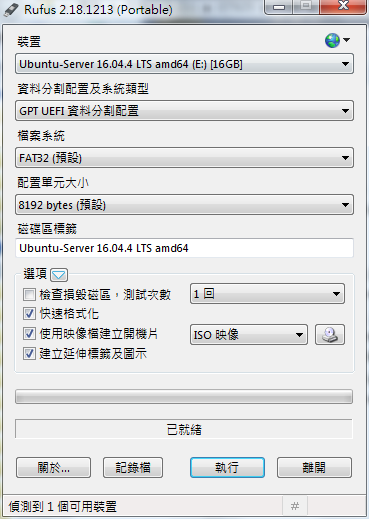

Software Define Radio - Amarisoft AMARI LTE 100 SDR
An exercise of running personal 4G LTE base station software on Linux PC.
- Install and run
Amarisoft AMARI LTE 100 SDRon Linux PC to buildPersonal 4G-LTE Service. - UE should be able to connect
SDRin this case.
Requirements
Hardware
- Ubuntu Linux PC
- Radio frontend: PCIe SDR board x 3
- RTL8111/8168/8411 PCI Express Gigabit Ethernet Card (Optional)
$ lspci 05:00.0 Ethernet controller: Realtek Semiconductor Co., Ltd. RTL8111/8168/8411 PCI Express Gigabit Ethernet Controller (rev 07) 06:00.0 Ethernet controller: Realtek Semiconductor Co., Ltd. RTL8111/8168/8411 PCI Express Gigabit Ethernet Controller (rev 07) 07:00.0 Ethernet controller: Realtek Semiconductor Co., Ltd. RTL8111/8168/8411 PCI Express Gigabit Ethernet Controller (rev 07) 08:00.0 Ethernet controller: Realtek Semiconductor Co., Ltd. RTL8111/8168/8411 PCI Express Gigabit Ethernet Controller (rev 07) - WLAN Card (Optional)
Software
Installation
Topology
-------------------------------------
/ Internet /
-------------------------------------
/ * Outbound Interface of Router:
/ - IPv4: 61.228.45.217
/ - IPv6: 2001:b011:200b:1d1:1262:ebff:fe90:7320/64
------------------------------------
/ Router /
/ /
------------------------------------
/ * Inbound Interface of Router:
/ - IPv4: 192.168.167.1
/ - IPv6: 2001:b011:200b:129a:1262:ebff:fe90:7320/64 (for example)
-----------------------------------
/ Amarisoft AMARI LTE 100 / * SDR
/ / - IPv4: 192.168.167.20
/ APN: {default | internet...} / - IPv6: 2001:b011:200b:129a:6245:cbff:fe87:5612/64 (for example)
-----------------------------------
/\ /\ * UE: APN1 (Default APN) ... APN-2, APN-3, APN-4
/ \ APN1 / \ - IPv4: - IPv6:
/ \ / \ * tun0: 192.168.2.1 * tun0:
--------------- --------------- * tun1: 192.168.3.1 * tun1:
/ UE 1 / / UE 2 ... / * tun2: 192.168.4.1 * tun2: 2001:468:3000:1::/48
--------------- --------------- * tun3: 192.168.5.1 * tun3: 2001:468:4000:1::/48
IPv4: 192.168.2.x IPv4: 192.168.3.x
Ubuntu PC
- Download
Ubuntu Server ISO Imageand burn it into USB dongle byrufuswith below setting.
| rufus2.18 | rufus3.1 |
|---|---|
|  |
-
Plug
Ubuntu dongleto PC and bootup PC by using this Bootable dongle (selecting USB Bootup inBIOS/UEFIboot menu) -
Install
Ubuntu Serverto Linux PC, enableStandard system utilities,Virtual Machine hostandOpenSSH server -
there will be some network interfaces
# ifconfig
enp0s31f6 Link encap:Ethernet HWaddr 60:45:cb:87:56:12
inet addr:192.168.0.12 Bcast:192.168.0.255 Mask:255.255.255.0
inet6 addr: fe80::6245:cbff:fe87:5612/64 Scope:Link
UP BROADCAST RUNNING MULTICAST MTU:1500 Metric:1
RX packets:144 errors:0 dropped:0 overruns:0 frame:0
TX packets:140 errors:0 dropped:0 overruns:0 carrier:0
collisions:0 txqueuelen:1000
RX bytes:22555 (22.5 KB) TX bytes:23194 (23.1 KB)
Interrupt:16 Memory:f7700000-f7720000
enp5s0 Link encap:Ethernet HWaddr 00:e0:4c:68:4e:c9 #<= for KVM
UP BROADCAST MULTICAST MTU:1500 Metric:1
RX packets:0 errors:0 dropped:0 overruns:0 frame:0
TX packets:0 errors:0 dropped:0 overruns:0 carrier:0
collisions:0 txqueuelen:1000
RX bytes:0 (0.0 B) TX bytes:0 (0.0 B)
enp6s0 Link encap:Ethernet HWaddr 00:e0:4c:68:4e:ca
UP BROADCAST MULTICAST MTU:1500 Metric:1
RX packets:0 errors:0 dropped:0 overruns:0 frame:0
TX packets:0 errors:0 dropped:0 overruns:0 carrier:0
collisions:0 txqueuelen:1000
RX bytes:0 (0.0 B) TX bytes:0 (0.0 B)
enp7s0 Link encap:Ethernet HWaddr 00:e0:4c:68:4e:cb
UP BROADCAST MULTICAST MTU:1500 Metric:1
RX packets:0 errors:0 dropped:0 overruns:0 frame:0
TX packets:0 errors:0 dropped:0 overruns:0 carrier:0
collisions:0 txqueuelen:1000
RX bytes:0 (0.0 B) TX bytes:0 (0.0 B)
enp8s0 Link encap:Ethernet HWaddr 00:e0:4c:68:4e:cc
UP BROADCAST MULTICAST MTU:1500 Metric:1
RX packets:0 errors:0 dropped:0 overruns:0 frame:0
TX packets:0 errors:0 dropped:0 overruns:0 carrier:0
collisions:0 txqueuelen:1000
RX bytes:0 (0.0 B) TX bytes:0 (0.0 B)
lo Link encap:Local Loopback
inet addr:127.0.0.1 Mask:255.0.0.0
inet6 addr: ::1/128 Scope:Host
UP LOOPBACK RUNNING MTU:65536 Metric:1
RX packets:185 errors:0 dropped:0 overruns:0 frame:0
TX packets:185 errors:0 dropped:0 overruns:0 carrier:0
collisions:0 txqueuelen:1
RX bytes:13781 (13.7 KB) TX bytes:13781 (13.7 KB)
virbr0 Link encap:Ethernet HWaddr 00:00:00:00:00:00 #<= KVM
inet addr:192.168.122.1 Bcast:192.168.122.255 Mask:255.255.255.0
UP BROADCAST MULTICAST MTU:1500 Metric:1
RX packets:0 errors:0 dropped:0 overruns:0 frame:0
TX packets:0 errors:0 dropped:0 overruns:0 carrier:0
collisions:0 txqueuelen:1000
RX bytes:0 (0.0 B) TX bytes:0 (0.0 B)
- Install
ubuntu-desktopto PC
$ sudo apt-get update
$ sudo apt-get install ubuntu-desktop
$ sudo apt-get install lxde #<= (Optional)
$ sudo startx
- Install below packages to Ubuntu PC
$ sudo apt-get install wireshark #<= packet capturer
$ sudo apt-get install shutter #<= Screenshot capturer (Optional)
- Use Fixed IP on SDR, put below setting to
/etc/network/interfaces(Optional)
auto lo
iface lo inet loopback
auto enp0s31f6 #<= Interface
iface enp0s31f6 inet static
address 192.168.167.20 #<= Fixed IP
netmask 255.255.255.0
gateway 192.168.167.1
dns-nameserver 8.8.8.8
dns-nameserver 8.8.4.4
# IPv6
iface enp0s31f6 inet6 auto
- Issue below command to restart netwoek service
$ sudo /etc/init.d/networking restart
AMARI LTE 100
- Place key to
.amarisoftfolder
$ sudo mkdir /root/.amarisoft
$ sudo cp lteenb.key /root/.amarisoft/
$ sudo cp ltemme.key /root/.amarisoft/
- Untar SDR software
amarisoft.yyyy-mm-dd.tar.gz(e.qamarisoft.2018-04-01.tar.gz)
$ sudo tar xvf amarisoft.yyyy-mm-dd.tar.gz
$ sudo cd yyyy-mm-dd
$ sudo ./install.sh
- Installation

- There will be four network interfaces (tun0 ~ tun3) for APN 1 to 4 as default
$ sudo ifconfig
tun0 Link encap:UNSPEC HWaddr 00-00-00-00-00-00-00-00-00-00-00-00-00-00-00-00 #<= APN 1
inet addr:192.168.2.1 P-t-P:192.168.2.1 Mask:255.255.255.0
UP POINTOPOINT RUNNING NOARP MULTICAST MTU:1500 Metric:1
RX packets:0 errors:0 dropped:0 overruns:0 frame:0
TX packets:2 errors:0 dropped:0 overruns:0 carrier:0
collisions:0 txqueuelen:500
RX bytes:0 (0.0 B) TX bytes:152 (152.0 B)
tun1 Link encap:UNSPEC HWaddr 00-00-00-00-00-00-00-00-00-00-00-00-00-00-00-00 #<= APN 2
inet addr:192.168.3.1 P-t-P:192.168.3.1 Mask:255.255.255.0
UP POINTOPOINT RUNNING NOARP MULTICAST MTU:1500 Metric:1
RX packets:0 errors:0 dropped:0 overruns:0 frame:0
TX packets:2 errors:0 dropped:0 overruns:0 carrier:0
collisions:0 txqueuelen:500
RX bytes:0 (0.0 B) TX bytes:152 (152.0 B)
tun2 Link encap:UNSPEC HWaddr 00-00-00-00-00-00-00-00-00-00-00-00-00-00-00-00 #<= APN 3
inet addr:192.168.4.1 P-t-P:192.168.4.1 Mask:255.255.255.0
inet6 addr: 2001:468:3000:1::/48 Scope:Global
UP POINTOPOINT RUNNING NOARP MULTICAST MTU:1500 Metric:1
RX packets:0 errors:0 dropped:0 overruns:0 frame:0
TX packets:2 errors:0 dropped:0 overruns:0 carrier:0
collisions:0 txqueuelen:500
RX bytes:0 (0.0 B) TX bytes:152 (152.0 B)
tun3 Link encap:UNSPEC HWaddr 00-00-00-00-00-00-00-00-00-00-00-00-00-00-00-00 #<= APN 4
inet addr:192.168.5.1 P-t-P:192.168.5.1 Mask:255.255.255.0
inet6 addr: 2001:468:4000:1::/48 Scope:Global
UP POINTOPOINT RUNNING NOARP MULTICAST MTU:1500 Metric:1
RX packets:0 errors:0 dropped:0 overruns:0 frame:0
TX packets:2 errors:0 dropped:0 overruns:0 carrier:0
collisions:0 txqueuelen:500
RX bytes:0 (0.0 B) TX bytes:152 (152.0 B)
Troubleshooting
- Try to run MME, IMS, MBMS and eNB step-by-step, it will show the message if there is any problem while running each service.
$ sudo cd /root/mme
$ sudo ./ltemme config/mme.cfg
$
$ sudo cd ../ims
$ sudo ./lteims config/ims.cfg
$
$ sudo cd ../mbms
$ sudo ./ltembms
$
$ sudo cd ../enb
$ sudo ./lteenb config/enb.cfg
Amarisoft LTE Service
- There are the command which tunning Amarisoft LTE Service ON/OFF
$ sudo service lte start #<= START the LTE Service
$ sudo service lte stop #<= STOP the LTE Service
$ sudo service lte restart #<= RESTART the LTE Service
- Monitor Amarisoft Console
# screen -x lte
(enb) t # <= to active debug mode
(enb) ue # <= to list ue which connect to
- Screen Switching
| Hot-Key | Prompt | Message | Comment |
|---|---|---|---|
CTRL-A + 0 |
(mme) | (mme) log file.rotate=50M,file.path=/var/log/lte/ | |
CTRL-A + 1 |
(enb) | (enb) log file.rotate=50M,file.path=/var/log/lte/ | |
CTRL-A + 2 |
(mbms) | (mbms) log file.rotate=50M,file.path=/var/log/lte/ | |
CTRL-A + 3 |
(ims) | (ims) log file.rotate=50M,file.path=/var/log/lte/ | |
CTRL-A + D |
n/a | [detached from 9541.lte] | Exit Console |
Scripts
eNB
- Turn-Key Scripts: There are some default scripts for
1CC,2CC,3CC,Multi-Cell,Cat-M1andNB-IoTconnections in this case.
| # | Turnkey | BW (n_rb_dl) | DL Antenna (n_antenna_dl) | UL Antenna (n_antenna_ul) | PCC (dl_earfcn) | SCC1(or Cell2) | SCC2 |
|---|---|---|---|---|---|---|---|
| 1 | enb-1_4mhz.cfg | 6 (1.4M) | 1 | 1 | 1692 (B3) | n/a | n/a |
| 2 | enb-2cc-mimo.cfg | 100 ( 20M) | 2 | 1 | 900 (B2) | 2150 (B4) | n/a |
| 3 | enb-3cc-mimo.cfg | 50 ( 10M) | 2 | 1 | 900 (B2) | 2150 (B4) | 300 (B1) |
| 4 | enb-ca.cfg | 25 ( 5M) | 1 | 1 | 900 (B2) | 2150 (B4) | n/a |
| 5 | mimo-2x2-5mhz.cfg | 25 ( 5M) | 2 | 2 | 3350 (B7) | n/a | n/a |
| 6 | mimo-2x2-20mhz.cfg | 100 ( 20M) | 2 | 2 | 3350 (B7) | n/a | n/a |
| 7 | multi-cell.cfg | 25 ( 5M) | 1 | 1 | 3350 (B7) | 3299 (B7) | n/a |
| 8 | enb-nbiot.cfg | n/a | 1 | 1 | 6300 (B20) | n/a | n/a |
| 9 | enb-nbiot-inband.cfg | 25 ( 5M) | 1 | 1 | 6300 (B20) | n/a | n/a |
| 10 | enb-catm1.cfg | n/a | N_ANTENNA_DL | 1 | 3350 (B7) | n/a | n/a |
PS. mimo-2x2-5mhz.cfg soft-link to enb.cfg as default eNB Script
- Scripts after modification
| # | Modification | BW (n_rb_dl) | DL Antenna (n_antenna_dl) | UL Antenna (n_antenna_ul) | PCC (dl_earfcn) | SCC1(or Cell2) | SCC2 |
|---|---|---|---|---|---|---|---|
| 1 | enb-1cc-mimo2.cfg | 25 ( 5M) | 2 | 1 | 1692 (B3) | n/a | n/a |
| 2 | enb-2cc-mimo2.cfg | 25 ( 5M) | 2 | 1 | 1692 (B3) | 3350 (B7) | n/a |
| 3 | enb-3cc-mimo2.cfg | 25 ( 5M) | 2 | 1 | 1692 (B3) | 3350 (B7) | 300 (B28) |
- FDD Band and dl_earfcn
Frequency Calculator
| # (Band) | MAX BW | dl_earfcn | DL Center Frequency |
|---|---|---|---|
| 1 | 20 | 300 | 2132 MHz |
| 2 | 900 | 1960 MHz | |
| 3 | 1575 | 1842.5 MHz | |
| 4 | 2150/2175 | 2130 MHz/(FIXME) | |
| 5 | 2525 | 881.5 MHz | |
| 7 | 3100/3350 | (FIXME)/2680 MHz | |
| 8 | 3625 (FIXME) | (FIXME) | |
| 12 | 5095 (FIXME) | (FIXME) | |
| 13 | 5230 (FIXME) | (FIXME) | |
| 17 | 5790 (FIXME) | (FIXME) | |
| 18 | 5925 (FIXME) | (FIXME) | |
| 19 | 6075 (FIXME) | (FIXME) | |
| 20 | 6300 | 806 MHz | |
| 21 | 6525 (FIXME) | (FIXME) | |
| 25 | 8365 (FIXME) | (FIXME) | |
| 26 | 8865 (FIXME) | (FIXME) | |
| 28 | 9345 (FIXME) | (FIXME) | |
| 29 | 9715 (FIXME) | (FIXME) | |
| 30 | 9820 (FIXME) | (FIXME) |
- TDD Band and dl_earfcn
| # (Band) | MAX BW | dl_earfcn | DL Center Frequency |
|---|---|---|---|
| 38 | 38000/38050 | (FIXME)/2600 MHz | |
| 39 | 38450 (FIXME) | (FIXME) | |
| 40 | 39150 (FIXME) | (FIXME) | |
| 41 | 40620 | 2593 MHz | |
| 42 | 42590 | 3500 MHz | |
| 66 | 66886 (FIXME) | (FIXME) |
- Reference
- (Telit LN940 LTE Cat 9 & 11 M.2 Data Cards)[https://rutronik-tec.com/ln940/]
- default eNodeB scripts in Amarisoft
root@sdr:~/enb/config# ls drb.cfg enb.cfg meas_config_a3_3350.asn sib15.asn sib23_rb25_srs_sc4.asn drb_nb.cfg enb.default.cfg meas_config_periodic.asn sib1.asn sib23_rb50.asn drb-tdd.cfg enb-mbms.cfg mimo-2x2-20mhz.cfg sib1-mbms.asn sib23_rb50_br.asn enb-1_4mhz.cfg enb-nbiot.cfg mimo-2x2-5mhz.cfg sib23_rb100.asn sib23_rb6.asn enb-2cc-mimo.cfg enb-nbiot-inband.cfg multi-cell.cfg sib23_rb15.asn sib23_rb75.asn enb-3cc-mimo.cfg enb-parallel.cfg rf_driver sib23_rb25.asn sib2_nb.asn enb-ca.cfg enb-tdd.cfg rf_select.sh sib23_rb25_br.asn sib5.asn enb-catm1.cfg meas_config_a3_3299.asn sdr sib23_rb25_nbr.asn sib6.asn
MME
APN
- APN profile in
mme.cfgby default
| access_point_name | pdn_type | first_ip_addr | last_ip_addr | ip_addr_shift | dns_addr | pdn_type | first_ipv6_prefix | last_ipv6_prefix | dns_addr |
|---|---|---|---|---|---|---|---|---|---|
| default | ipv4 | 192.168.2.2 | 192.168.2.254 | 2 | 8.8.8.8 | n/a | n/a | n/a | n/a |
| internet | ipv4 | 192.168.3.2 | 192.168.3.254 | 2 | 8.8.8.8 | /ipv4v6/ | 2001:468:3000:1:: | 2001:468:3000:ffff:: | 2001:4860:4860::8888 |
| ims | n/a | 192.168.4.2 | 192.168.4.254 | 2 | 8.8.8.8 | n/a | 2001:468:3000:1:: | 2001:468:3000:ffff:: | 2001:4860:4860::8888 |
| sos | 192.168.5.2 | 192.168.5.254 | 2 | 8.8.8.8 | ipv4v6 | 2001:468:4000:1:: | 2001:468:4000:ffff:: | 2001:4860:4860::8888 |
PS. APN2's ipv4v6 is commented by default
- APN profile after modification
mme2.cfgforIPv4v6 DualStack
| access_point_name | pdn_type | first_ip_addr | last_ip_addr | ip_addr_shift | dns_addr | pdn_type | first_ipv6_prefix | last_ipv6_prefix | dns_addr |
|---|---|---|---|---|---|---|---|---|---|
| default | ipv4 | 192.168.2.2 | 192.168.2.254 | 2 | 8.8.8.8 | n/a | n/a | n/a | n/a |
| internet | ipv4 | 192.168.3.2 | 192.168.3.254 | 2 | 8.8.8.8 | ipv4v6 | 2001:468:3000:1:: | 2001:468:3000:ffff:: | 2001:4860:4860::8888 |
| ims | n/a | 192.168.4.2 | 192.168.4.254 | 2 | 8.8.8.8 | n/a | 2001:468:3000:1:: | 2001:468:3000:ffff:: | 2001:4860:4860::8888 |
| sos | 192.168.5.2 | 192.168.5.254 | 2 | 8.8.8.8 | ipv4v6 | 2001:468:4000:1:: | 2001:468:4000:ffff:: | 2001:4860:4860::8888 |
PS. Turn on IPv6 for APN1 and APN2 [FIXME]
UE Database
- UE Database in
ue_db-ims.cfgfor Anritsu SIM only
| SIM | sim_algo | imsi | amf | sqn | K | impi | impu |
|---|---|---|---|---|---|---|---|
| Anritsu | xor | 001010123456789 | 0x9001 | 000000000000 | 00112233445566778899aabbccddeeff | 001010123456789@ims.mnc001.mcc001.3gppnetwork.org | ["001010123456789", "tel:0600000000", "tel:600"] |
- UE Database after modification for R&S SIM
ue_db-ims2.cfg
| SIM | sim_algo | imsi | amf | sqn | Ki | impi | impu |
|---|---|---|---|---|---|---|---|
| Anritsu | xor | 001010123456789 | 0x9001 | 000000000000 | 00112233445566778899aabbccddeeff | 001010123456789@ims.mnc001.mcc001.3gppnetwork.org | ["001010123456789", "tel:0600000000", "tel:600"] |
| R&S (Taobao) | xor | 001012345678901 | 0x9001 | 000000000000 | 000102030405060708090A0B0C0D0E0F | 001010123456789@ims.mnc001.mcc001.3gppnetwork.org | ["001010123456789", "tel:0600000000", "tel:600"] |
| R&S (Z04) | xor | 001010123456063 | 0x9001 | 000000000000 | 000102030405060708090A0B0C0D0E0F | 001010123456789@ims.mnc001.mcc001.3gppnetwork.org | ["001010123456789", "tel:0600000000", "tel:600"] |
| R&S (Z05) | xor | 001010123456063 | 0x9001 | 000000000000 | 000102030405060708090A0B0C0D0E0F | 001010123456789@ims.mnc001.mcc001.3gppnetwork.org | ["001010123456789", "tel:0600000000", "tel:600"] |
- All files under mme configuration folder by default
root@sdr:~/mme/config# ls
ims.cfg mme.cfg mme-ifup mt_call_qos.sdp mt_call_video.sdp
lte_ue_ims.db mme-default.cfg mme-ims.cfg mt_call.sdp ue_db-ims.cfg
IMS
- n/a
MBMS
- n/a
Connectivity
- Enable SDR
- Power on UE
- UE should be able to
(mme) ue
IMSI IMEISV M_TMSI REG TAC #ERAB IP_ADDR
001010123456789 8611070337354809 0x36b751cb Y 00101. 0x1 1 192.168.2.2
Usage - Restful API
Throughput Test
Speedtest
- Access Speedtest Websit
Ixia IxChariot
- Install Endpoint
- Enable DMZ on CPE
- Running IxChariot on PC
Iperf
- TCP
- Server
tbd - Client
tbd - UDP
- Server
tbd - Client
tbd
Web File
- Place 1g file to
/var/www/html
$ sudo dd if=/dev/zero of=1g bs=1048576 count=0 seek=1024
- Download this file to CPE (or LAN-PC/KVM)
$ wget -O/dev/null http://192.168.2.1/1g
- OR-
$ curl http://192.168.2.1/1g > /dev/null 2>&1
- Script (Continuous Download)
[TBD]
FTP
- Enable one FTP Sservice on SDR
$ sudo apt-get install vsftpd
- Create one 1g file for downloading test
$ sudo dd if=/dev/zero of=1g bs=1048576 count=0 seek=1024 0+0 records in 0+0 records out 0 bytes copied, 0.000119446 s, 0.0 kB/s $ chmod 777 1g $ ls -lah 1g -rwxrwxrwx 1 root root 1.0M Jul 2 16:47 1g - Try to access FTP server via FTP client on Windows 7
C:\Windows\system32>ftp 192.168.0.12 剌쓀慕뛴걇 192.168.0.12 220 (vsFTPd 3.0.3) 使用者 (192.168.0.12:(none)): sdr 331 Please specify the password. 密碼: 230 Login successful. ftp> ls 200 PORT command successful. Consider using PASV. 150 Here comes the directory listing. 226 Directory send OK. ftp> pwd 257 "/home/sdr" is the current directory ftp> get 1g ftp> bye
Speedtest
-
Test by Internet Speedtest Server
-
Test by using Local Speedtest Server
Throughput Test by Virtual Machine(Advanced)
- Prepare Image (
Ubuntu 18.04)
$ wget http://ftp.ubuntu-tw.net/ubuntu-releases/18.04/ubuntu-18.04-live-server-amd64.iso
- Prepare KVM program
$ apt-get update
$ apt-get install qemu-utils qemu-system-x86
$ apt-get install qemu-kvm libvirt-bin ubuntu-vm-builder bridge-utils
$ apt-get install virt-viewer
$ apt-get install virt-manager
-
virt-manager
-
Docker
-
OpenStack
-
Reference:
- 在 Ubuntu Linux 中使用 KVM（使用 vmbuilder）
- Installing Debian wheezy on QEMU
- QEMU/Options
Troubleshooting
Log
- else
screen -x, SDR also provide below debug method - Console:
- /tmp/enb0.log
- /tmp/ims.log
- /tmp/lte.log
- /tmp/mbmsgw.log
- /tmp/mme.log
- GUI:
- http://192.168.0.12/lte/
CPU Usage
- top
- sysstat
- mpstat (CPU usages for each core)
# mpstat 2 -P ALL
Linux 4.4.0-128-generic (sdr) 07/03/2018 _x86_64_ (8 CPU)
10:54:59 AM CPU %usr %nice %sys %iowait %irq %soft %steal %guest %gnice %idle
10:55:01 AM all 1.54 0.00 0.64 0.06 0.00 0.00 0.00 0.00 0.00 97.75
10:55:01 AM 0 2.13 0.00 0.53 0.00 0.00 0.00 0.00 0.00 0.00 97.34
10:55:01 AM 1 1.60 0.00 0.53 0.00 0.00 0.00 0.00 0.00 0.00 97.86
10:55:01 AM 2 5.85 0.00 1.60 0.00 0.00 0.00 0.00 0.00 0.00 92.55
10:55:01 AM 3 2.63 0.00 1.05 0.00 0.00 0.00 0.00 0.00 0.00 96.32
10:55:01 AM 4 0.00 0.00 0.00 0.50 0.00 0.00 0.00 0.00 0.00 99.50
10:55:01 AM 5 0.00 0.00 0.00 0.00 0.00 0.00 0.00 0.00 0.00 100.00
10:55:01 AM 6 0.50 0.00 0.50 0.00 0.00 0.00 0.00 0.00 0.00 99.00
10:55:01 AM 7 0.00 0.00 0.00 0.00 0.00 0.00 0.00 0.00 0.00 100.00
TRX_SDR
SDR Card
- Precondition: Disable SDR service
$ sudo service lte stop
- Blinking LED on SDR Card 1, Card 2 and Card 3
$ sudo ./sdr_util -c 0 led 1
=== Device /dev/sdr0 ===
$ sudo ./sdr_util -c 1 led 1
=== Device /dev/sdr0 ===
$ sudo ./sdr_util -c 2 led 1
=== Device /dev/sdr0 ===
- Turn LED off
$ sudo ./sdr_util -c 0 led 0
=== Device /dev/sdr0 ===
$ sudo ./sdr_util -c 1 led 0
=== Device /dev/sdr0 ===
$ sudo ./sdr_util -c 2 led 0
=== Device /dev/sdr0 ===
GPS status
- Display GPS status
$ sudo ./sdr_util gps_state
=== Device /dev/sdr0 ===
GPS not locked
=== Device /dev/sdr1 ===
GPS not locked
=== Device /dev/sdr2 ===
GPS not locked
Syslog
Installation
-
line 100
./install.sh: line 100: [: 16.04: integer expression expected -
link 60
/root/trx_sdr/install.sh: line 60: [: 16.04: integer expression expected
<--
Instrument
-->